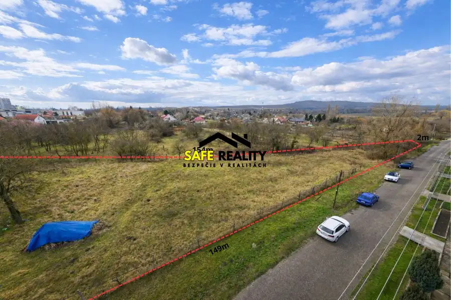
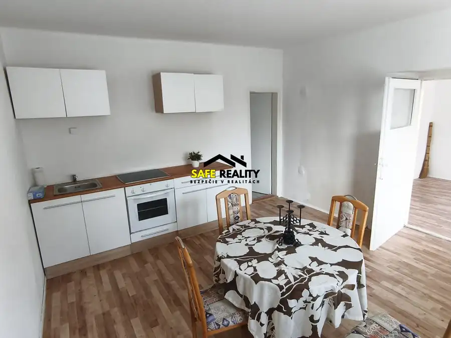

EXKLUZÍVNE Vinica s dvoma viničnými domčekmi
Nána
- Plocha2537 m²
- Poschodie0.
- Stavpôvodný
- Vlastníctvoosobné
O nehnuteľnosti
Ponúkam na predaj priestrannú vinicu o výmere 2537 m², situovanú v malebnej, tradičnej vinohradníckej lokalite pri Štúrove. Pozemok je dlhý približne 250–300 m, so šírkou približne 9 m, obklopený kopcami, zeleňou a čistým prostredím.
Na pozemku sa nachádzajú dva samostatné viničné domčeky:
1. Drevený domček (cca 20 m²)
Vhodný ako náradovňa, dielňa alebo sklad, s podkrovným úložným priestorom.
2. Betónový domček (cca 20 m²)
S komínom a po úprave stropu vhodný aj na prenocovanie. Predná časť má pripravenú konštrukciu na pergolu/prístrešok – ideálne miesto na posedenie, výhľad na vinohrady či západ slnka.
Domčeky boli postavené približne v roku 1983, majú pôvodné drevené okná a dvere, elektrinu 380/400 V. Voda, odpad a pivnica nie sú k dispozícii. Prístup je po asfaltovej ceste a následne po nespevnenej komunikácii. Predná časť pozemku je rovinatá a vhodná na parkovanie.
Okolie a lokalita – jedinečné miesto s atmosférou vinohradníckeho regiónu
Táto časť Štúrova patrí medzi obľúbené vinárske oblasti, kde sa spája pokoj vidieka, krásne výhľady a bohaté prírodné scenérie.
Výhľady a príroda
Z horných častí vinice sa ponúkajú panoramatické výhľady na majestátnu Ostrihomskú baziliku, jednu z najväčších katedrál v Európe.
Okolité kopce ako Belianske vrchy, Mužlianske kopce, Kamenný most či Nána sú ako stvorené pre nenáročné prechádzky aj dlhšie túry.
Lokalita je ideálna aj pre zberateľov húb, milovníkov lesa, ticha a prírody.
Aktivity v okolí – oddych, šport, rodina
V širšom okolí sa nachádzajú rôzne možnosti na trávenie voľného času:
Štúrovo:
Termálne kúpalisko Vadaš – celoročné wellness, termálne bazény, tobogány, masáže
Vodné športy – Dunaj ponúka kayaking, kanoistiku aj člnkovanie
Cyklotrasy – množstvo značených cyklotrás smerom na Maďarsko, Kamenín, Náňu, Belu
Turistika v lesoch okolo Dunaja aj v kopcoch nad mestom
Rybárčenie – Dunaj, Hron a okolití rybníky sú známe bohatými úlovkami
Historické pamiatky, miestny kostol, kultúrne akcie najmä v letných mesiacoch
Ostrihom (Esztergom):
Dostupný pár minút autom alebo cez most pre peších.
Ostrihomská bazilika – najväčšia v Maďarsku, nezabudnuteľný výhľad z kupoly
Ostrihomský hrad s múzeom a historickými expozíciami
Dunajská promenáda – ideálne miesto na večernú prechádzku, reštaurácie, kaviarne, trhy
Aquapark Aquasziget – celoročné bazény, wellness, sauna svet
V okolí sú pohoria Gerecse, Börzsöny, Pilis, Visegrádské vrchy a Dobogókő, známe nádhernými výhľadmi a turistickými trasami
Pre koho je táto nehnuteľnosť ideálna
pre milovníkov viníc a tradičného vinohradníctva
pre tých, čo hľadajú víkendový pozemok, záhradu či miesto na oddych
pre investorov hľadajúcich rekreačný alebo pestovateľský potenciál
pre ľudí, ktorí chcú vlastné víno, ovocie a pokoj uprostred prírody
pre rodiny, cyklistov, turistov aj rybárov
Vinica ponúka pokoj, súkromie, atmosféru starých vinohradov a výbornú dostupnosť do Štúrova aj Ostrihomu.
Pre viac informácii, alebo obhliadku ma neváhajte kontaktovať.
Martina Šigutová
tel. číslo:
email:
Parametre
| Rozloha pozemku | 2537 m² |
|---|---|
| Poschodie | prízemie |
| Vlastníctvo | osobné |
| Stav | pôvodný |
| Voda | nie |
| El. napätie | 230/400V |
| Plyn | nie |
| Kanalizácia | nie |
| Terén | mierny svah |
| Prístupová cesta | neupravená cesta |
| Dátum zverejnenia | 8. 12. 2025 |
Kde to je
Mohlo by Vás zaujímať

Pozemok10 34 900 €EXKLUZÍVNE Stavebný pozemok – dve samostatné parcely 3 148 m² Gbelce 3148 m² Ponúkam na predaj priestranný stavebný pozemok, ktorý pozostáva z dvoch parciel: 2004 m² 1144 m² Pozemky sa nachádzajú v pokojnej a príjemnej…
Rodinné domy10 92 900 €Predaj rodinný dom - Lúčnica nad Žitavou Lúčnica nad Žitavou 3-izbový170 m² Predám 3-izbový rodinný dom v obci Lúčnica nad Žitavou, časť Martinová – len 5 km od mesta Vráble. Nehnuteľnosť je vhodná ako trvalé bývanie aj ako…